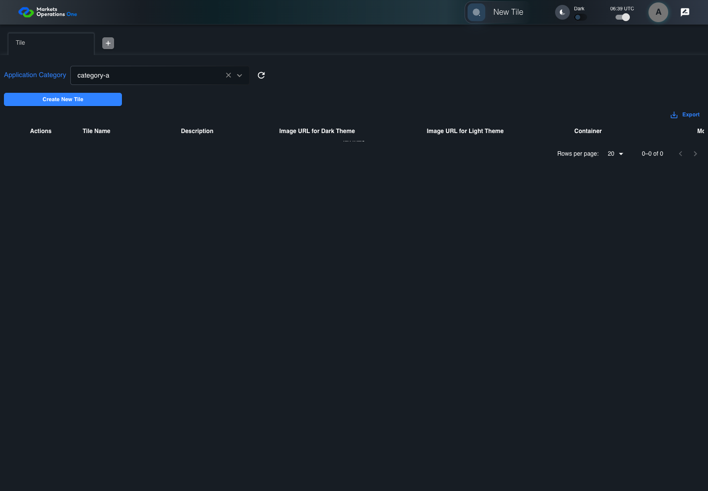
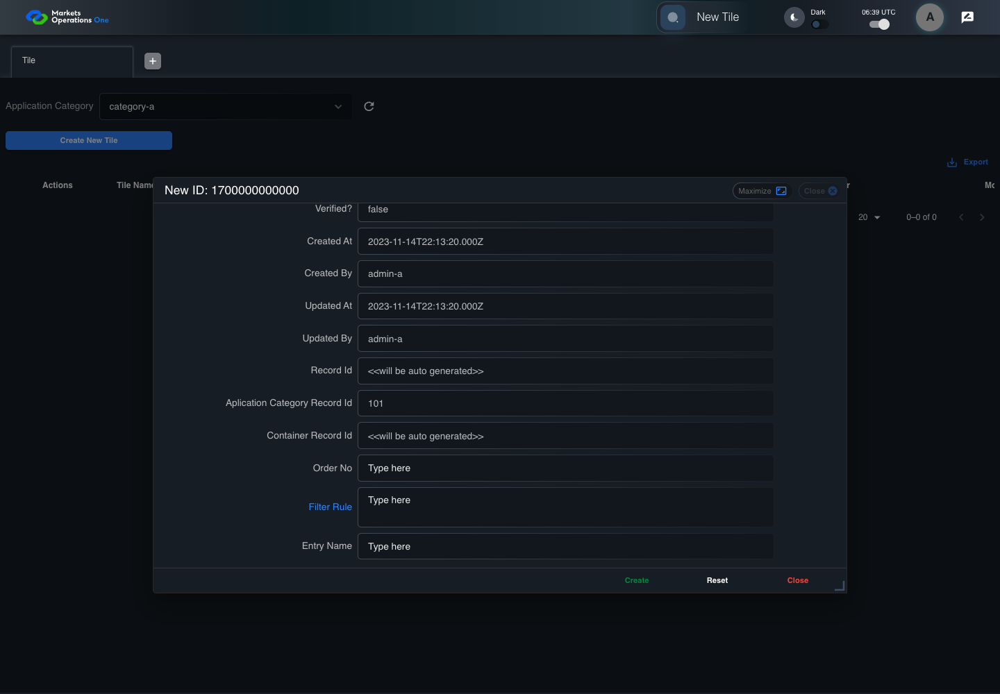
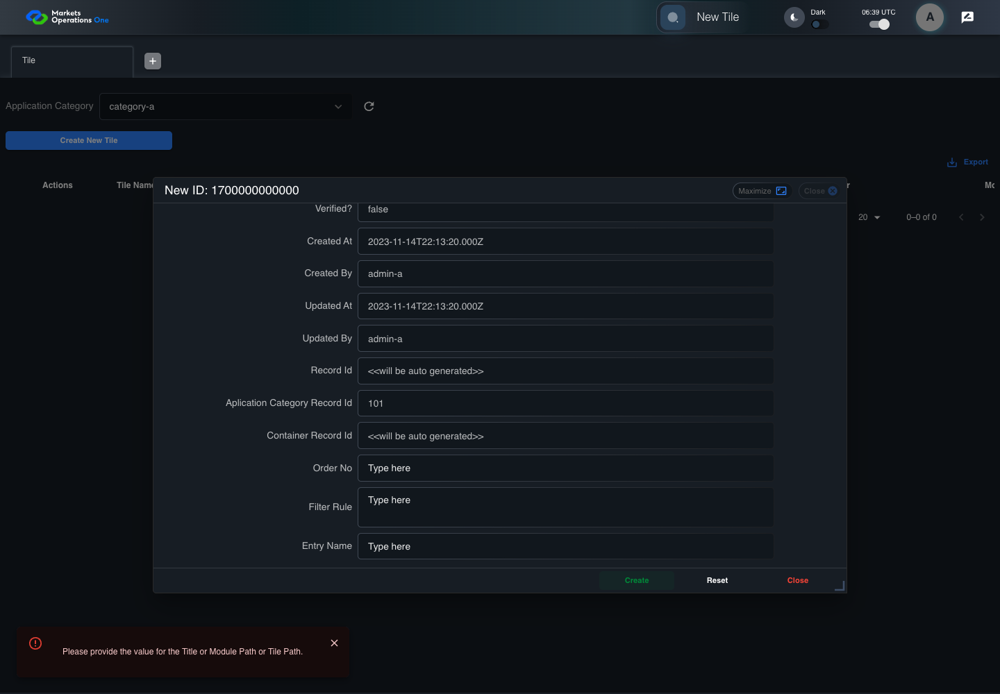

BFF-ADM-009 current BFF administration through actual UI
PASS · application/run-072/bff-adm-009-current-bff-administration-through-actual-ui-d296b83f00b5-attempt-1 · ACTUAL_APPLICATION_LOCAL_SERVICES
Actual current React and exact-current BFF admin controllers/services/JPA with actual migration DDL in disposable PostgreSQL. Controlled OUD/EMS2 identities and local Spring bootstrap. Fixture SQL seeds/mutates isolated records; service errors are actual database errors. Undefined agreed messages remain unresolved acceptance.
2026-10-22T06:39:02.120Z to 2026-10-22T06:39:08.487Z
Assertions and result · Artifact manifest · Exact run inputs and source hashes
Result SHA-256:68e689847f25d681d90bec373f6f1af3a1c0098b31a8e30bd0085c9d060f480fMachine observations
- actual-identity-projection.json
3f83580ef3cb40882f5ebad7f3383a34f9f95c2b215823ad5db455e3901d1c08 - baseline-inputs.json
45cef1a044fdf2760a7ca4cbf689381effd5e2e445bf2c0a4a54a091736d85a4 - bff-boundary.json
72d05016b7d0f938a45b61fbafcfbfc59298c220d2fe43f33d80ed57f11c26a2 - committed-ui-submission-comparisons.json
28fe67dce4afa7b80230c5d2927cb9ad28334f4bd9f96eb4e4a3531e9f024b64 - creation-clock.json
ba9ba62bf32116b99f313190be42141edf5c255ce51da7d13116c03f062d737a - empty-filter-rule-representation.json
52d6c62de37ae71ecafb7bd95f8580c07c211330bf37eb5cb3372ae559a1ade2 - fixture-step-10.json
0c1996b6ad6da66459709aadc5c5c965b00520ae7e46c33a49a106fbeb45e238 - fixture-step-11.json
c0c255726ee9a4ec5fce68d2b29837ec45858ebcfbeb74fc585114402f388b95 - fixture-step-6.json
d2696abae6a4e6868fb041c9a4d9a967034c53825bd8b74b3a5502230ad4aac6 - fixture-step-7.json
ea1e9c1f206f2a3443cfbc5c5b154353411aa75b6a08b1eafeb40fea311d8f53 - fixture-step-8.json
245dab30669bd67d2a095f867ef5417cf9d45f50c2d8e226b681e1b95d4fe407 - fixture-step-9.json
071f1c7d67f5cf918f5b6e721f76875fa63ce458d063c2565d17db3ec62e49e7 - initial-persisted-records.json
e3c80fa5f54b252e365c4af782ddf1a7b3c18f767a6c46594ff07bb86d7d1245 - persisted-after-submit.json
5de6ff6a74199ff4bb2ba2313b049e1f6aa26221f90fdba25c1dc5d8578ecaf2 - reference-snapshot-3.json
ae8bfd6ec38772dcf70673459092bc42fb4835bd000fd43dd0f8911f29ee80fb - reference-snapshot-4.json
312df692518a9add4df77b89f136d02bd58693073c5ad1ec6c2eeb902b0e8280 - ui-origin-bff-requests.json
c2c8a6b531a9bbcabdd96d99abdfc5bb387e7822ad96faa9c13e861aff05382b
Screenshot capture: CAPTURED. Named frames: 25.
Step screenshot evidence: COMPLETE. 24/24 canonical steps have execution screenshots.
Canonical step timeline
Given Admin A uses subject "admin-a" with role "FMO_ADMIN" in an isolated authenticated browser
Execution: PASSED.1. step-01 Visible state after step 1: Given Admin A uses subject "admin-a" with role "FMO_ADMIN" in an isolated authenticated browser
2026-10-22T06:39:03.816Z · 1440×1000
Step: /Users/lushevol/code/github/ratan-release-impact/workbench/tasks/ui-test-coverage-20261022/test-cases.md:14966
SHA-256:eec5872632406774f1e3e79de8a07c7249836241108ba771cff133ac015434d3And the controlled Tile fixture records the initial grid rows and persisted values
Execution: PASSED.2. step-02 Visible state after step 2: And the controlled Tile fixture records the initial grid rows and persisted values
2026-10-22T06:39:03.930Z · 1440×1000
Step: /Users/lushevol/code/github/ratan-release-impact/workbench/tasks/ui-test-coverage-20261022/test-cases.md:14967
SHA-256:8981f23155a955bd889f87b5d7fcafbd6ca0da538567d51a37c43a995c599cf8And Category 101 has label "category-a" and Import Map 201 has Module Name "container-a"
Execution: PASSED.
3. step-03 Visible state after step 3: And Category 101 has label "category-a" and Import Map 201 has Module Name "container-a"
2026-10-22T06:39:03.963Z · 1440×1000
Step: /Users/lushevol/code/github/ratan-release-impact/workbench/tasks/ui-test-coverage-20261022/test-cases.md:14968
SHA-256:6e45dc27b67ab3efb3d9280ff61fee72e58757001c21c3fadc1594e9b3f38f7aAnd both references belong to "FMO_ADMIN" and the Tile page category filter value is Category 101
Execution: PASSED.
4. step-04 Visible state after step 4: And both references belong to "FMO_ADMIN" and the Tile page category filter value is Category 101
2026-10-22T06:39:03.996Z · 1440×1000
Step: /Users/lushevol/code/github/ratan-release-impact/workbench/tasks/ui-test-coverage-20261022/test-cases.md:14969
SHA-256:6e45dc27b67ab3efb3d9280ff61fee72e58757001c21c3fadc1594e9b3f38f7aAnd the controlled creation clock returns 1700000000000 milliseconds
Execution: PASSED.5. step-05 Visible state after step 5: And the controlled creation clock returns 1700000000000 milliseconds
2026-10-22T06:39:04.029Z · 1440×1000
Step: /Users/lushevol/code/github/ratan-release-impact/workbench/tasks/ui-test-coverage-20261022/test-cases.md:14970
SHA-256:165b3043054d4699293501830517c4b5a2d3fe02386c7a9246d7df39b9307ae6And the baseline fixture data defines "Tile Name" as "tile-009"
Execution: PASSED.
6. step-06 Visible state after step 6: And the baseline fixture data defines "Tile Name" as "tile-009"
2026-10-22T06:39:04.070Z · 1440×1000
Step: /Users/lushevol/code/github/ratan-release-impact/workbench/tasks/ui-test-coverage-20261022/test-cases.md:14971
SHA-256:165b3043054d4699293501830517c4b5a2d3fe02386c7a9246d7df39b9307ae6And the baseline fixture data defines "Module Path" as "/fixture"
Execution: PASSED.7. step-07 Visible state after step 7: And the baseline fixture data defines "Module Path" as "/fixture"
2026-10-22T06:39:04.117Z · 1440×1000
Step: /Users/lushevol/code/github/ratan-release-impact/workbench/tasks/ui-test-coverage-20261022/test-cases.md:14972
SHA-256:883034f63985c6ca077afe7182752ff7401decbb7891dae8e3e80f61e8062601And the baseline fixture data defines "Tile Path" as "/case-009"
Execution: PASSED.
8. step-08 Visible state after step 8: And the baseline fixture data defines "Tile Path" as "/case-009"
2026-10-22T06:39:04.180Z · 1440×1000
Step: /Users/lushevol/code/github/ratan-release-impact/workbench/tasks/ui-test-coverage-20261022/test-cases.md:14973
SHA-256:18cc7acb1e891ce228da1bf0e5c353c2ef60485b135ee88a1c1d9c603e614846And the baseline fixture data defines "Role Entities" as "E-TRADE"
Execution: PASSED.
9. step-09 Visible state after step 9: And the baseline fixture data defines "Role Entities" as "E-TRADE"
2026-10-22T06:39:04.261Z · 1440×1000
Step: /Users/lushevol/code/github/ratan-release-impact/workbench/tasks/ui-test-coverage-20261022/test-cases.md:14974
SHA-256:27a1caed333d287c3697e871f3ecab67d2c0f34e15862dfe74dbf1b64c17033bAnd the baseline fixture data defines "Filter Rule" as ""
Execution: PASSED.
10. step-10 Visible state after step 10: And the baseline fixture data defines "Filter Rule" as ""
2026-10-22T06:39:04.297Z · 1440×1000
Step: /Users/lushevol/code/github/ratan-release-impact/workbench/tasks/ui-test-coverage-20261022/test-cases.md:14975
SHA-256:3f060a384844617aefa0ad98340d3ba16797a8b2d02d7b989bb229ce937c7056And the baseline Tile references use "Aplication Category" "category-a" and "Container" "container-a"
Execution: PASSED.
11. step-11 Visible state after step 11: And the baseline Tile references use "Aplication Category" "category-a" and "Container" "container-a"
2026-10-22T06:39:04.329Z · 1440×1000
Step: /Users/lushevol/code/github/ratan-release-impact/workbench/tasks/ui-test-coverage-20261022/test-cases.md:14976
SHA-256:3f060a384844617aefa0ad98340d3ba16797a8b2d02d7b989bb229ce937c7056When Admin A clicks the button labeled "Create New Tile" on the Tile administration page
Execution: PASSED.12. step-12 Visible state after step 12: When Admin A clicks the button labeled "Create New Tile" on the Tile administration page
2026-10-22T06:39:04.542Z · 1440×1000
Step: /Users/lushevol/code/github/ratan-release-impact/workbench/tasks/ui-test-coverage-20261022/test-cases.md:14977
SHA-256:04fd13012be555833dc9aca5a6d53642ff84974fc578bd70836e5443ef5031a2Then the dialog titled "new ID: 1700000000000" is visible on the Tile administration page
Execution: PASSED.13. step-13 Visible state after step 13: Then the dialog titled "new ID: 1700000000000" is visible on the Tile administration page
2026-10-22T06:39:04.591Z · 1440×1000
Step: /Users/lushevol/code/github/ratan-release-impact/workbench/tasks/ui-test-coverage-20261022/test-cases.md:14978
SHA-256:57799736e2c6fd03b703f34ab7d282e79f32dd02e600d00f0c59af1e5167c170When Admin A clicks the combobox labeled "Container" in dialog "new ID: 1700000000000"
Execution: PASSED.14. step-14 Visible state after step 14: When Admin A clicks the combobox labeled "Container" in dialog "new ID: 1700000000000"
2026-10-22T06:39:04.708Z · 1440×1000
Step: /Users/lushevol/code/github/ratan-release-impact/workbench/tasks/ui-test-coverage-20261022/test-cases.md:14979
SHA-256:e5d8854d63735b2f22141ebb0c8e124df165b09d42896d7c829b2a5089145465And Admin A clicks the option labeled "container-a" in the expanded "Container" listbox for dialog "new ID: 1700000000000"
Execution: PASSED.
15. step-15 Visible state after step 15: And Admin A clicks the option labeled "container-a" in the expanded "Container" listbox for dialog "new ID: 1700000000000"
2026-10-22T06:39:05.342Z · 1440×1000
Step: /Users/lushevol/code/github/ratan-release-impact/workbench/tasks/ui-test-coverage-20261022/test-cases.md:14980
SHA-256:e61940af594f16e72db8a461f3d4c999859344a468a536f7035b8a7fc11b42e1And Admin A fills the textbox labeled "Tile Name" with "" in dialog "new ID: 1700000000000"
Execution: PASSED.16. step-16 Visible state after step 16: And Admin A fills the textbox labeled "Tile Name" with "" in dialog "new ID: 1700000000000"
2026-10-22T06:39:05.781Z · 1440×1000
Step: /Users/lushevol/code/github/ratan-release-impact/workbench/tasks/ui-test-coverage-20261022/test-cases.md:14981
SHA-256:74efdd264f7d9e8464d9a44eaacc968f5ee620a116be30a88f60b439047543bdAnd Admin A fills the textbox labeled "Module Path" with "/fixture" in dialog "new ID: 1700000000000"
Execution: PASSED.17. step-17 Visible state after step 17: And Admin A fills the textbox labeled "Module Path" with "/fixture" in dialog "new ID: 1700000000000"
2026-10-22T06:39:06.208Z · 1440×1000
Step: /Users/lushevol/code/github/ratan-release-impact/workbench/tasks/ui-test-coverage-20261022/test-cases.md:14982
SHA-256:ba708a5326b500a18cbf33e26ec04f328a740fe24fc833bf6e7e795dbf201ad8And Admin A fills the textbox labeled "Tile Path" with "/case-009" in dialog "new ID: 1700000000000"
Execution: PASSED.18. step-18 Visible state after step 18: And Admin A fills the textbox labeled "Tile Path" with "/case-009" in dialog "new ID: 1700000000000"
2026-10-22T06:39:06.621Z · 1440×1000
Step: /Users/lushevol/code/github/ratan-release-impact/workbench/tasks/ui-test-coverage-20261022/test-cases.md:14983
SHA-256:ab1bde8228552f72f59b008983faec3dd5e17338a8be5f87763eff000baa0832And Admin A fills the textarea labeled "Role Entities" with "E-TRADE" in dialog "new ID: 1700000000000"
Execution: PASSED.19. step-19 Visible state after step 19: And Admin A fills the textarea labeled "Role Entities" with "E-TRADE" in dialog "new ID: 1700000000000"
2026-10-22T06:39:07.044Z · 1440×1000
Step: /Users/lushevol/code/github/ratan-release-impact/workbench/tasks/ui-test-coverage-20261022/test-cases.md:14984
SHA-256:5fa07728e8081a51f72d5ce30e98c6d122955e4b8e8ee6822b068b30672bd49cAnd Admin A fills the textarea labeled "Filter Rule" with "" in dialog "new ID: 1700000000000"
Execution: PASSED.
20. step-20 Visible state after step 20: And Admin A fills the textarea labeled "Filter Rule" with "" in dialog "new ID: 1700000000000"
2026-10-22T06:39:07.492Z · 1440×1000
Step: /Users/lushevol/code/github/ratan-release-impact/workbench/tasks/ui-test-coverage-20261022/test-cases.md:14985
SHA-256:e69c3eaeac3508be6447cedd7e26b30f0e9c276abeb2fd2922b928773bb90e4bAnd Admin A clicks the button labeled "Create" in dialog "new ID: 1700000000000"
Execution: PASSED.21. step-21 Visible state after step 21: And Admin A clicks the button labeled "Create" in dialog "new ID: 1700000000000"
2026-10-22T06:39:07.772Z · 1440×1000
Step: /Users/lushevol/code/github/ratan-release-impact/workbench/tasks/ui-test-coverage-20261022/test-cases.md:14986
SHA-256:dd4edff86b1a8646ed2e1e0b10bc0a69a67bbd9efba5b67c555a6ac6dbfbcc97Then the dialog titled "new ID: 1700000000000" remains visible on the Tile administration page
Execution: PASSED.22. step-22 Visible state after step 22: Then the dialog titled "new ID: 1700000000000" remains visible on the Tile administration page
2026-10-22T06:39:07.819Z · 1440×1000
Step: /Users/lushevol/code/github/ratan-release-impact/workbench/tasks/ui-test-coverage-20261022/test-cases.md:14987
SHA-256:366d0cbe2f17bac04bcb3c53bd2a60020b1eb96e1f850009fee10f31c3c4586bAnd the alert with severity "error" in the portal snackbar contains the exact text "Please provide the value for the Title or Module Path or Tile Path."
Execution: PASSED.
23. step-23 Visible state after step 23: And the alert with severity "error" in the portal snackbar contains the exact text "Please provide the value for the Title or Module Path or Tile Path."
2026-10-22T06:39:07.886Z · 1440×1000
Step: /Users/lushevol/code/github/ratan-release-impact/workbench/tasks/ui-test-coverage-20261022/test-cases.md:14988
SHA-256:9676d7b84a6e2ff6852627b391f5f34aff0e9e5eed0d1e200aab12c5ff3a115eAnd the Tile data grid with column "Record Id" row identifiers and loaded field values equal the initial grid snapshot on the Tile administration page
Execution: PASSED.
24. step-24 Visible state after step 24: And the Tile data grid with column "Record Id" row identifiers and loaded field values equal the initial grid snapshot on the Tile administration page
2026-10-22T06:39:08.008Z · 1440×1000
Step: /Users/lushevol/code/github/ratan-release-impact/workbench/tasks/ui-test-coverage-20261022/test-cases.md:14989
SHA-256:ae0a5a7aadf157c5604944397cb957f8dbf23c0a46a831ca952d40faecd878ec
Additional named frames

The final visible state after the named test assertions.
2026-10-22T06:39:08.089Z · 1440×1000Step: Test source: /Users/lushevol/code/github/ratan-release-impact/workbench/e2e/audit-specs/bff-admin.spec.ts:11
SHA-256:
e3ca8ee24704d89bb35b4ffa20a3edf4f101098433a4dafcac06676fdc2a508aScreenshots establish visible state only. Assertions and traces support functional claims.